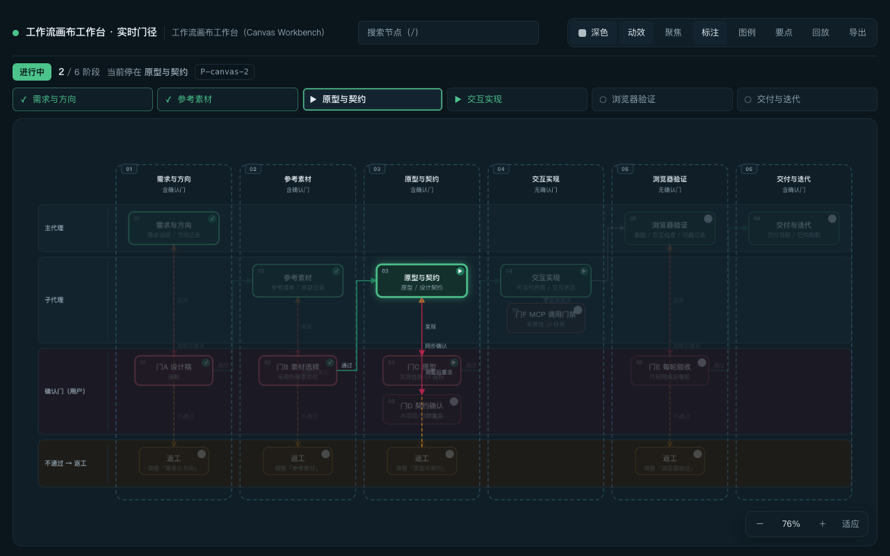
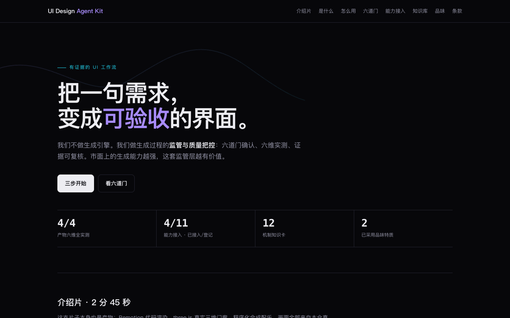
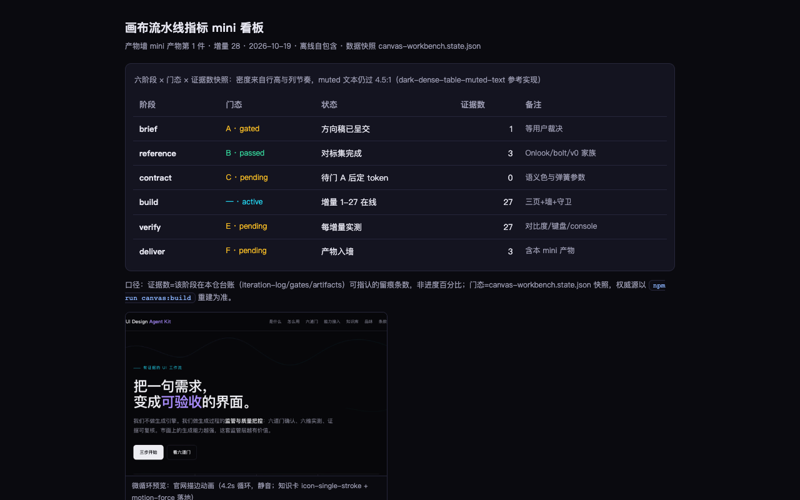
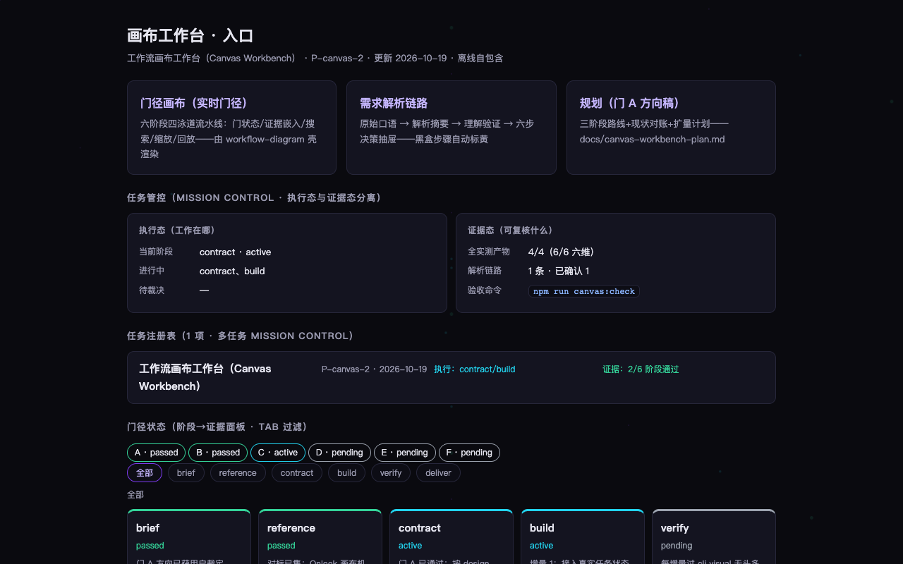
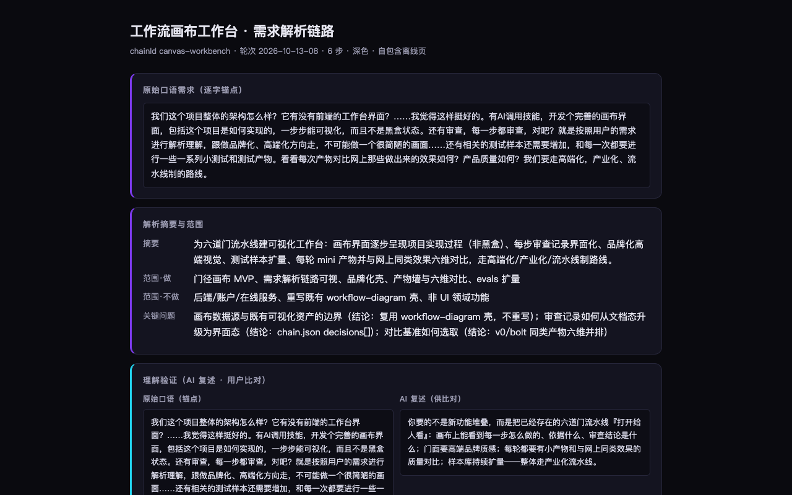

画布工作台 · 入口
工作流画布工作台（Canvas Workbench） · P-canvas-2 · 更新 2026-10-19 · 离线自包含
任务管控（mission control · 执行态与证据态分离）
执行态（工作在哪）
当前阶段contract · active
进行中contract、build
待裁决—
证据态（可复核什么）
全实测产物5/5（6/6 六维）
解析链路1 条 · 已确认 1
验收命令npm run canvas:check
任务注册表（1 项 · 多任务 mission control）
工作流画布工作台（Canvas Workbench）
P-canvas-2 · 2026-10-19
执行：contract/build
证据：2/6 阶段通过
门径状态（阶段→证据面板 · tab 过滤）
A · passedB · passedC · activeD · pendingE · pendingF · pending
全部
该阶段无卡片（过滤结果为空）
briefpassed
门 A 方向已获用户裁定（2026-10-19）：工作台形态升级+艺术画面明示要求+能力地平线四序列；阶段 4 新增
referencepassed
对标已集：Onlook 画布机制/bolt 设计系统专题/v0 Agentic+设计系统（学习循环 20-26 轮），第四层定位论证完成
contractactive
门 A 已通过：按 design-contract 定画布语义 token 与动效参数（阶段 4 艺术画面升级的契约层）
buildactive
增量 1：接入真实任务状态（本文件即画布工作台自身的第一份活数据——吃狗粮）
verifypending
每增量过 cli visual 无头多视口回执 + 六维验收
deliverpending
产物入画布产物墙，与对标产物六维并排（KPI4）
解析链路（1 条）
✓ 已确认
工作流画布工作台
2026-10-13-08 · 6 步
打开 ↗
方向与品味（越用越懂你 · 2 已采用 / 7 条特质 · 5 条信号）
特质只从可复核信号推导（你的原话、明确选择、被接受/被拒的方案），每条都能回溯到具体信号；置信度不足只展示不采用。规则见 canvas/derive-taste.mjs（证据上限钳制 + 采用需 ≥2 条独立信号）。
仅展示
偏好监管深度而非生成广度
70%
sig-002
已采用
重视视觉与艺术画面质量
85%
sig-001 · sig-005
仅展示
要求方向与状态持续可见
70%
sig-004
仅展示
希望工作流随使用累积理解用户
70%
sig-004
已采用
要求证据优先、反感夸大
80%
sig-003 · sig-002
仅展示
偏好结构化证据界面
70%
sig-005
仅展示
把工作台界面视为产品门面
70%
sig-001
能力接入（工作流监管层 · 4 已接入 / 11 登记）
本仓不做生成引擎：外部能力按契约接入，工作流负责门径、验收与证据（docs/capability-adapters.md）。待接入项为空缺状态，不得用于交付。
已接入
Remotion 视频合成视频
Remotion 官方 skills · tooling/sources.lock.json
视频口径：时长/帧率/确定性帧/音画同步/首帧静音可读/字幕对比度；叙事节拍见知识卡 video-launch-narrative-structure
已接入
Motion 官方技能网页动效
Motion (motion.dev) · tooling/sources.lock.json
网页六维（含降动效降级）
已接入
anatomy 等距技术图静态图像（SVG）
wheresryan22/anatomy (MIT) · e9488296（tooling/sources.lock.json）
静态图像口径：来源血缘+可复现（构建脚本+参数）
已接入
GSAP 动效技能族网页动效
GSAP 官方 · tooling/sources.lock.json
网页六维（含降动效降级）
待接入
图像生成能力（候选空缺）静态图像（位图）
—
静态图像口径：尺寸/格式/色域/来源血缘/生成参数可复现
待接入
3D 建模能力（候选空缺）3D 资产
—
3D 口径：面数/包围盒/材质完整性/浏览器实测加载
不接入
Mobbin MCP（设计参考检索）知识库（参考检索）
Mobbin（Pro/Team 订阅）
若接入需：订阅成本确认、检索结果可本地留存、检视级别如实标
待接入
AI 宣传片制作器（liyupi）视频（工作流套件）
liyupi（MIT） · 未钉版（候选，需先本地跑通再钉）
其自带闸门（渲染前后检查+按场景截图审查）之上，再叠本仓视频口径复核；节奏数值已并入知识卡 video-launch-narrative-structure v2
待接入
Meshy（AI 3D 生成）3D 资产
Meshy
3D 口径：面数/包围盒/材质完整性/浏览器实测加载
待接入
Frameronin（像素序列/多向动作）素材（像素动画）
frameronin.com
素材口径：来源血缘+序列完整性+帧率一致
待接入
Remotion Agent Skill（社区「视频导演级」工作流）视频（工作流范式）
社区实践（B 站 jeffzhengye《AI视频导演级Skill：Codex装上它5分钟出电影感产品宣传片》），同栈于本仓 remotion-video · —（社区实践，不钉版；技术栈已由 remotion-video 钉版覆盖）
若纳入：需以本仓视频口径复核（时长/帧率/确定性帧/音画同步/首帧静音可读/字幕对比度）+ 叙事节拍（video-launch-narrative-structure）+ 音效层（video-sound-design-layer）；不接受「5 分钟」作为质量声明
知识库（自学机制 · schema v1.1 · 12 卡 / 5 域 · 构成（静态形式） 4 · 运动（时间维度） 4 · 秩序（系统维度） 4）
每日视频学习 → 机制卡片（可编码参数+适用边界）→ 兼容性声明（extends/supersedes/conflicts）→ 转化。规范 docs/self-learning-loop.md · docs/knowledge-base/schema.md。
motion
音效设计是宣传片的第三根支柱：转场/强调/节奏三层音效三件套可测
创意者动画制作公司《音效+快闪字体+UI界面完美配合》 · 2.7 万播放 · 参数 6 条
order
60 秒是宣传片的标准交付形态：一主片 + 多时长剪辑矩阵60秒标准版可测
B 站「AI产品宣传片」Top30 交叉 · 30.8 万播放 · 参数 6 条
order
动效的灵魂是曲线：三族缓动 + 特殊曲线的可枚举族谱可测
B 站曲线主题 Top10 交叉 · 8.0 万播放 · 参数 5 条
references 索引（知识检索第一层 · 61 文件）
先索引后详情（claude-mem 三层模式第一层，增量 79 立卡兑现）：全部技能 references 文件的构建期索引，页内查找（Ctrl/Cmd+F）定位、仓库打开详情；机读层 output/references-index.json 供脚本消费，构建期自证计数与枚举一致。
ui-design-agent（25）acceptance.md · copy-contract.md · dark-surface-standards.md · data-dense-surfaces.md · design-contract.md · detail-constants.md · detail-critique.md · gate-protocol.md · image-to-code-fidelity.md · inspiration-library.md · material-scouting.md · motion-contract.md · plan-execute.md · product-readme.md · prototype-handover.md · source-catalog.md · spatial-media.md · stitch-mcp.md · tool-routing.md · typography-standards.md · ui-designer-thinking.md · user-taste-profile.md · video-craft.md · web3d-hud-architecture.md · workflow-visualization.md
remotion-best-practices（18）remotion-best-practices/remotion-maps/techniques/cesium/references/3d-data-sources.md · remotion-best-practices/remotion-maps/techniques/cesium/references/3d-flyover-architecture.md · remotion-best-practices/remotion-maps/techniques/cesium/references/3d-troubleshooting.md · remotion-best-practices/remotion-maps/techniques/mapbox/references/render-stability.md · remotion-best-practices/remotion-maps/techniques/maplibre/references/render-stability.md · remotion-best-practices/remotion-maps/techniques/maptiler/references/map-data-sources.md · remotion-best-practices/remotion-maps/techniques/maptiler/references/map-explainer-architecture.md · remotion-best-practices/remotion-maps/techniques/maptiler/references/map-geo-prep.md · remotion-best-practices/remotion-maps/techniques/maptiler/references/render-stability.md · remotion-best-practices/remotion-markup/remotion-maps/techniques/cesium/references/3d-data-sources.md · remotion-best-practices/remotion-markup/remotion-maps/techniques/cesium/references/3d-flyover-architecture.md · remotion-best-practices/remotion-markup/remotion-maps/techniques/cesium/references/3d-troubleshooting.md · remotion-best-practices/remotion-markup/remotion-maps/techniques/mapbox/references/render-stability.md · remotion-best-practices/remotion-markup/remotion-maps/techniques/maplibre/references/render-stability.md · remotion-best-practices/remotion-markup/remotion-maps/techniques/maptiler/references/map-data-sources.md · remotion-best-practices/remotion-markup/remotion-maps/techniques/maptiler/references/map-explainer-architecture.md · remotion-best-practices/remotion-markup/remotion-maps/techniques/maptiler/references/map-geo-prep.md · remotion-best-practices/remotion-markup/remotion-maps/techniques/maptiler/references/render-stability.md
remotion-markup（9）remotion-markup/remotion-maps/techniques/cesium/references/3d-data-sources.md · remotion-markup/remotion-maps/techniques/cesium/references/3d-flyover-architecture.md · remotion-markup/remotion-maps/techniques/cesium/references/3d-troubleshooting.md · remotion-markup/remotion-maps/techniques/mapbox/references/render-stability.md · remotion-markup/remotion-maps/techniques/maplibre/references/render-stability.md · remotion-markup/remotion-maps/techniques/maptiler/references/map-data-sources.md · remotion-markup/remotion-maps/techniques/maptiler/references/map-explainer-architecture.md · remotion-markup/remotion-maps/techniques/maptiler/references/map-geo-prep.md · remotion-markup/remotion-maps/techniques/maptiler/references/render-stability.md
promotion-playbook（3）anti-patterns.md · channel-playbook.md · readme-conversion.md
remotion-video-agent（2）three-and-web.md · workflow.md
uak-design-system（2）pro-rules.md · quick-reference.md
uak-design-thinking（2）library-picks.md · motion-glossary.md
反例记录（只增不删 · 7 条 · 7 已修复）
本仓产物的真实缺陷与漏计：失败记录的传播力不低于成功案例（59 轮判读）。修复后标 resolved 并写明提交，绝不删除——反例是证据的一部分。
已修复
reducedMotion 完成度漏计（徽章 5/6 误报）完成度判定依赖措辞关键词（通过/实测/直拍/可达/全过），reducedMotion 条目写的是'静态检查'，不含任何关键词，导致徽章显示 5/6、mission control 全实测 0/2——实际该维度已通过检查，纯措辞漏计。教训：验收判据必须与文案措辞解耦；发现漏计的当时就要同时修文案、建守卫、立语料三件套
2026-10-17 · 增量 21 措辞修正；增量 24 dataGuard；增量 33 语料→工具闭环
已修复
导出 manifest 自我漂移（978→1178 字节）manifest.json 把自身字节写入自身列表，二次写入使字节变化，导出对账首跑即失败。教训：任何记账系统不能把自己算进被记账对象；自指必须显式豁免并文档化
2026-10-18 · 增量 27
已修复
产物墙空态永不显示wall-empty 空态区块被加入页面时未接显隐逻辑（hidden 属性从不被 JS 更新），若过滤结果为空用户会看到空白而非提示——增量 29 加入插画时发现并顺带修复。教训：加任何'条件显示'的区块，必须同时接状态更新逻辑；空态是最容易被忘记接线的区块
2026-10-19 · 增量 29
已修复
官网 520px 横向溢出 115px三步卡 .step 内 pre（长 git clone URL 最小内容宽度）撑破 grid 1fr 列 + 知识库表 min-content 611px——520px 视口 scrollWidth=635，六维 mobile'无裁切'宣称失真。v1.0 起潜伏，增量 54 为 alias chip 复拍时新加 scrollWidth 探针才发现。教训：'无裁切/无溢出'类宣称必须有 scrollWidth 实测背书；grid 子项放 pre/表格等宽内容时必须 minmax(0,1fr)+min-width:0
2026-10-21 · 增量 54
已修复
360/390/414px 横向溢出（能力表撑破）增量 54 修了 520px 的 .step 与 kb 表，但 overflowGuard 只测 520/1280 两个宽度，恰好跳过真实手机宽度。用户复核后发现 360px 溢出 77px、390px 47px、414px 23px——元凶是四列能力接入表（min-content 413px）。教训：响应式断言必须扫真实设备宽度带（320/360/375/390/414/768…），不能只挑两档代表性宽度；'我测过两个宽度'不是'响应式没问题'
2026-10-21 · 增量 55
已修复
对比度采样器双盲区：白名单+40 上限漏掉 10 个真违例自有对比度采样器按选择器白名单（h1/p/.st/…）取 ≤40 个节点：.sst/.audit-id 类从不在白名单，工作台第 12 个 .st 超出上限——增量 67 用 axe-core 独立引擎对抗重测，首跑抓到 10 个真违例（pending 灰 #6b7280 3.77:1 ×6、accent 紫 #7c3aed 作正文 3.2:1 ×4），而自有断言一直宣称'全过'。教训：'全过'宣称的覆盖面必须等于被验面全集或如实标截断；自证要配独立引擎证伪（双引擎各盲区互补：axe 抓不到白名单外的自我口径盲区，自有采样器抓不到动画时序盲区）；修色只修文本色、装饰色（边框/渐变）不受 WCAG 文本对比度约束
2026-10-24 · 增量 67
已修复
分发在列的页面不在验收清单（覆盖缺口类）canvas-workbench.html 在 distribute-canvas 清单第一位、随 showcase 展示，却不在 canvas:check 默认清单——面向用户的页面零验收。增量 76 首测即抓三真缺陷：wf-chip 白字对 accent 2.2:1（四色 chip 全违反）、无 icon 触发 /favicon.ico 404 污染 console 门、未入产物墙。教训：'没检查过'不等于'没问题'：分发动作有清单、验收动作也必须有同源清单；新页面入分发清单的同一笔提交必须同时入验收清单，否则就是未检先发的覆盖缺口
2026-10-26 · 增量 76
审计报告（聚合机验 · complete · 8/8 confirmed）
聚合多项机验为一份机器可读发现报告（计数以 findings 行为准，output/audit-report.json）；终态只有 complete 与 incomplete+确切原因 两种——adopted 自 cloudflare/security-audit-skill（学循环 89）。复核命令 npm run audit:report。
全部
该域无发现（过滤结果为空）
✓ confirmedkb-integritydocs/knowledge-base/index.json: 12 cards, layers={"composition":4,"motion":4,"order":4}
✓ confirmedcaps-integritycanvas/capabilities.json: 11 entries, statuses valid=true
✓ confirmedregressions-append-onlycanvas/regressions.json: 7 entries, all carry id/date/lesson=true
✓ confirmedsfx-heroscripts/sfx-check.mjs: 36 items, issues=[]
✓ confirmedsfx-60scripts/sfx-check.mjs: 18 items, issues=[]
✓ confirmedtimeline-60scripts/timeline-check.mjs: 10 items, issues=[]
✓ confirmedregressions-historygit 全历史逐版本 id 集合对比（独立于当前形态检查的证据路径）: 5 versions / 7 entries
✓ confirmedsubmission-numbers数字对账通过：语料 236 / 知识卡 12 / 能力 11(4+6+1) / 产物 5 / 反例 7
报告头：fc96da2 · 工作区有未提交改动（如实记录） · 生成于 2026-10-26T20:03:19
对抗验证回执（独立引擎证伪 · axe-core ×2）
axe-core 独立引擎试图证伪自有断言（color-contrast 单规则 / WCAG A/AA 全规则，serious+critical 门）；负自测先于真实扫描（引擎静默即测试无效）。回执落 output/adversarial-*.json；本地仪器不入 CI 路线。
complete ✓adversarial-contrast独立引擎证伪失败：axe 在 4 页扫过 500 个文本节点，0 个 color-contrast 违例（另有 35 个 axe 无法判定节点如实记录）——自有断言经受住对抗重测
complete ✓adversarial-a11y独立引擎 WCAG A/AA 证伪失败：4 页 0 个 serious/critical 违例（0 条 moderate 以下提示如实记录，86 个 axe 无法判定节点）
断言对账回执（claims vs receipts · complete · 10/10 confirmed）
产物墙六维散文断言逐条对账真实检查器回执（node scripts/wall-reconcile.mjs）：断言数字不在回执中→needs_validation+确切差异——修正=重测+如实枚举，不是改回执。回执落 output/wall-reconcile.json；本地仪器不入 CI 路线。
✓ confirmedchain-canvas-workbench.contrast断言含回执数 84
✓ confirmedchain-canvas-workbench.keyboard断言含回执数 11/13
✓ confirmedcanvas-index-hub.contrast断言含回执数 200
✓ confirmedcanvas-index-hub.keyboard断言含回执数 46/53
✓ confirmedmini-dashboard.contrast断言含回执数 42
✓ confirmedmini-dashboard.keyboard断言含回执数 0/0
✓ confirmedproduct-site.contrast断言含回执数 200
✓ confirmedproduct-site.keyboard断言含回执数 20/14
✓ confirmedcanvas-workbench-live.contrast断言含回执数 179
✓ confirmedcanvas-workbench-live.keyboard断言含回执数 27/19
产物墙（KPI4 · 5 件 · 全部）
|
徽章口径：n/6=六维实测数（桌面/移动/键盘/对比度/降动效/控制台各 1 分）；vN=版本序号；检视级别 unverified-partial=仅公开页面检视，未公开验证的维度记 — 不虚记。
6/6实时门径画布（工作流图壳 · 增量 76 验收覆盖缺口闭环入墙）AI+人工v?2026-10-26-02
产物scripts/workflow-diagram/cli.mjs → output/canvas-workbench.html（离线自包含，含内联产物） 打开产物 ↗
六维desktop: Chrome headless 1280 直拍通过（11.3 万字节非空白，任务态渲染）；mobile: 520px Chrome headless 直拍通过（无横向裁切，17 宽度守卫 5 页全过）；keyboard: playwright Tab 序列实测：27 步焦点循环/19 项静态可聚焦（双尺子口径：tabbed=循环回到 body 前的步数含 SVG 流程图节点可聚焦（增量 77 取证实锤：g 节点 30 次进 tab 序列=键盘可达性完整性，非异常）；focusableTotal=summary/a/button 静态计数——增量 76 首测口径+77 根因注）；contrast: playwright computed-style WCAG 实测：179 项文本全过 4.5:1（低于标准 0 项；增量 76 首测 wf-chip 白字对 accent 仅 2.2:1 违例——四色 chip 统一改深字 var(--bg) 后修复，四底全 ≥5.6:1）；reducedMotion: 过渡动画 0.3s ease 且 prefers-reduced-mo
对比
vs bolt.new Bolt Agent 分档面板（Standard/Max + Speed/Intelligence/Token cost 自报矩阵）本产物 6/6 · 对标 1/1 可观测检视级别 unverified-partial
六维并排评分：✓=有实测/实看证据，✗=实测缺失，—=不可观测不计分母| 维度 | 本产物 | 对标 |
|---|
| 桌面 | ✓ | ✓ |
| 移动 | ✓ | — |
| 键盘 | ✓ | — |
| 对比度 | ✓ | — |
| 降动效 | ✓ | — |
| 控制台 | ✓ | — |
对标侧为公开营销页实看：仅桌面呈现可观测，其余维度无公开可验证证据，记 null 不虚记
同为'能力状态一屏'信息架构：他们=厂商自报能力矩阵（无口径无回执），本产物=门态+实测回执的实时壳（六维数字全部机验）——能力面板与证据面板的物种分野实证
证据（仓内路径）：docs/competitive-insights/2026-10-25-bolt-recheck3/insight.md
状态
来源AI 起草 + 人工修订
6/6产品官网页（公开展示/使用指南/条款入口）AI+人工v32026-10-19-20
产物canvas/render-site.mjs + canvas/{artifacts,capabilities,taste-profile}.json → output/site.html（离线自包含） 打开产物 ↗
六维desktop: Chrome headless 1280 直拍通过；scrollWidth=1280 无横向溢出（17 宽度扫描 320→1920 全 clean，增量 55 实测）；mobile: 320/360/375/390/414/480/520px 七档全无横向溢出（scrollWidth=clientWidth，增量 55 实测）；宽表在容器内横向滚动、内容不裁切；390px 依赖 viewport meta+防御 CSS；keyboard: playwright Tab 序列实测：20 步焦点循环/14 项静态可聚焦（双尺子口径：差值 6=video 元素内部 shadow 控件焦点位（增量 77 取证实锤：Tab 20 步中 7 步停在 video 控件），如实呈报不抹平——增量 75 复测口径+77 根因注）；contrast: playwright computed-style WCAG 实测：200 项文本全过 4.5:1（低于标准 0 项，采样触 200 上限如实记 truncated；增量 54 复测含视频区；增量 67 axe-core 独立引擎对抗重测
对比
vs Framer 首屏（design agent 定位页）本产物 6/6 · 对标 1/1 可观测检视级别 unverified-partial
六维并排评分：✓=有实测/实看证据，✗=实测缺失，—=不可观测不计分母| 维度 | 本产物 | 对标 |
|---|
| 桌面 | ✓ | ✓ |
| 移动 | ✓ | — |
| 键盘 | ✓ | — |
| 对比度 | ✓ | — |
| 降动效 | ✓ | — |
| 控制台 | ✓ | — |
对标侧为公开首屏实看：仅桌面呈现可观测，其余维度无公开可验证证据，记 null 不虚记
同为 design agent 定位页：Framer 的 Agent/Style 双模式与'alongside you not instead of you'句式与本仓'监管而非生成'同源；本页差异=数字全部从工作台 JSON 实时计算（宣称不超证据）
证据（仓内路径）：docs/competitive-insights/2026-10-19-framer-firstlook/insight.md
状态v2.2（宽表容器内滚+17 宽度溢出扫描）
来源AI 起草 + 人工修订 — 页面由代理编写；定位句式借鉴 Framer'alongside not instead'（知识卡判读）与 10-19 用户方向裁定
变更v1.0 首版（展示/三步/六道门/能力/知识库/品味/条款，数字从工作台 JSON 计算）→ v2.0 单笔描边循环动画（reduced-motion 停帧）+ 入产物墙 → v2.1 知识库表场景化别名 chip（与工作台同 aria 契约）+ 修复 520px 横向溢出 115px（.step pre 最小内容宽+kb 表 min-content，reg-004）+ check 新增 aliasGuard/aliasCoverage/overflowGuard 三守卫 → v2.2 三张宽表包 .table-wrap 容器内滚（reg-005：360/390/414px 能力表 min-content 413px 撑破）；overflowGuard 2→17 宽度
6/6画布流水线指标 mini 看板（产物墙首件 mini 产物）AI+人工v22026-10-19-00
产物canvas/render-mini-dashboard.mjs → output/mini-dashboard.html（离线自包含） 打开产物 ↗
六维desktop: Chrome headless 1280 直拍通过（9.3 万字节非空白）；mobile: 520px Chrome headless 直拍通过（7.8 万字节；备注列 560px 下防御性折叠为四列，无横向裁切）；keyboard: playwright Tab 序列实测：0 项可聚焦（纯静态数据页无交互件——如实记 0/0，非缺失）；contrast: playwright computed-style WCAG 实测：42 项文本全过 4.5:1（低于标准 0 项，含 muted 表头/脚注/备注；增量 67 axe-core 独立引擎对抗重测 0 违例）；reducedMotion: 无过渡动画（静态检查通过）；console: playwright 实测 0 错误
对比
vs Pixso 八阶段流水线 tabs（产品规划→需求梳理→原型图→UI设计→设计系统→交互演示→交付→文件管理）本产物 6/6 · 对标 1/1 可观测检视级别 unverified-partial
六维并排评分：✓=有实测/实看证据，✗=实测缺失，—=不可观测不计分母| 维度 | 本产物 | 对标 |
|---|
| 桌面 | ✓ | ✓ |
| 移动 | ✓ | — |
| 键盘 | ✓ | — |
| 对比度 | ✓ | — |
| 降动效 | ✓ | — |
| 控制台 | ✓ | — |
对标侧为公开营销页实看：仅桌面呈现可观测，其余维度无公开可验证证据，记 null 不虚记
同为'阶段×状态'信息架构：他们=营销功能面板（无门无证据无停点），本产物=门态+证据数台账快照（口径脚注明示非进度百分比）——同形状不同物种判读的产物级实证
证据（仓内路径）：docs/competitive-insights/2026-10-18-pixso-recheck2/insight.md
状态v1.1（动效化+微循环预览）
来源AI 起草 + 人工修订 — 生成器与版式由代理编写，数据为 state.json 快照（人工口径校对：证据数=留痕条数而非进度）
变更v1.0 首版：六阶段×门态×证据数快照（dark-dense-table-muted-text 语料的参考实现——密度来自行高与列节奏，muted 文本仍过 4.5:1）→ v1.1 motion-force 三段式入场（stagger 33ms/cubic-bezier(.2,0,0,1)/首屏一次，降动效全行立现）+ 门态上色语义化 + 微循环预览（stroke-loop.webm/gif 本地相对引用）
6/6画布工作台入口页（门径+链路+产物墙三合一）AI+人工v82026-10-13-08
产物canvas/render-index.mjs + canvas/artifacts.json + canvas-workbench.state.json → output/canvas-index.html（离线自包含） — 本页自指，不设自链
六维desktop: Chrome headless 1280 直拍通过（15.8 万字节非空白，增量 29 艺术画面复拍）；mobile: 520px Chrome headless 直拍通过（auto-fit 网格竖排、pills 换行、无裁切）；390px 依赖 viewport meta+防御 CSS（同 chain 页工具下限说明）；keyboard: playwright Tab 序列实测：46 项 tab 停留/53 项静态可聚焦（全量枚举：锚点目录 13 链接（含增量 79 references 索引区入目录）+两过滤栏 17 按钮+门径 10（6 抽屉 summary+4 证据链接）+产物墙 9+3 卡片链接+1 已确认态锚点；Tab 检测上限 96；增量 79 复测口径；对账器 wall-reconcile 常测）；contrast: playwright computed-style WCAG 实测：200 项文本全过 4.5:1（低于标准 0 项，采样触 200 上限如实记 truncated；增量 29 复测——生成式背景为独立装饰层，文字在面板底色上；增量 67
对比
vs Figma Make 首屏（prompt 框+示例 pill 模式）本产物 6/6 · 对标 1/1 可观测检视级别 unverified-partial
六维并排评分：✓=有实测/实看证据，✗=实测缺失，—=不可观测不计分母| 维度 | 本产物 | 对标 |
|---|
| 桌面 | ✓ | ✓ |
| 移动 | ✓ | — |
| 键盘 | ✓ | — |
| 对比度 | ✓ | — |
| 降动效 | ✓ | — |
| 控制台 | ✓ | — |
对标侧为公开首屏实看（未注册实测）：仅首屏呈现可观测，其余四维无公开可验证证据，记 null 不虚记
本页以状态卡片墙呈现工作台全景（门径/阶段/产物），Figma Make 首屏为单 prompt 入口——形态不同目标不同；借鉴示例 pill 的低门槛入口思路
证据（仓内路径）：docs/competitive-insights/2026-10-13-figma-make-recheck2/insight.md
状态v1.7（艺术画面+空态插画）
来源AI 起草 + 人工修订 — 入口页由代理编写，经用户门 A 方向确认与多轮增量修订（mission control/任务注册表/版本徽章）
变更v1.0 三卡入口+门径 pills+产物墙 → … → v1.6 墙扩至三条（mini 看板入墙）+键盘组成枚举修正 → v1.7 艺术画面落地（生成式微艺术背景+降动效静态帧+产物墙空态插画与微文案——用户 10-19 方向裁定'更好的艺术画面'首个增量）
6/6需求解析链路页（chain 渲染器首个产物）AI+人工v62026-10-13-00
产物canvas/render-chain.mjs + canvas/chain-canvas-workbench.json → output/chain-canvas-workbench.html（离线自包含） 打开产物 ↗
六维desktop: Chrome headless 1280×2400 直拍通过（37 万字节非空白）；mobile: 520px 直拍通过（Chrome headless Mac 最小窗宽下限；真实 390px 依赖 viewport meta+防御 CSS）；keyboard: playwright Tab 序列实测：11 项 tab 停留全可达（6 summary+3 条展开抽屉内 basis 链接+2 页脚互链；另 2 条 basis 链接在闭合抽屉内展开后可达，检测器计数 13——增量 21 复测口径）；contrast: playwright computed-style WCAG 实测：84 项文本全过 4.5:1（低于标准 0 项）；axe-core 独立引擎对抗重测 0 违例（增量 67）；reducedMotion: 过渡仅 border-color 且包 no-preference 媒体查询（静态检查通过）；console: playwright 实测 0 错误（修复 favicon 404：内联 data-URI）
对比
vs v0 Design Systems 2.0 导入 stepper（Pauses for review → approve → save → validate 四步流程页）本产物 6/6 · 对标 1/1 可观测检视级别 unverified-partial
六维并排评分：✓=有实测/实看证据，✗=实测缺失，—=不可观测不计分母| 维度 | 本产物 | 对标 |
|---|
| 桌面 | ✓ | ✓ |
| 移动 | ✓ | — |
| 键盘 | ✓ | — |
| 对比度 | ✓ | — |
| 降动效 | ✓ | — |
| 控制台 | ✓ | — |
对标侧为公开文档页实看：仅桌面呈现可观测，键盘可达性/对比度/降动效/console 均无公开可验证证据，记 null 不虚记
本产物以竖向链路+决策抽屉呈现'如何做的'（白盒），v0 stepper 呈现'导入四步操作'（流程）——形态不同层位不同；可借鉴其 stepper 的必经门视觉（approval disabled 态）用于 chain 页 verifyUnderstanding 卡
证据（仓内路径）：docs/competitive-insights/2026-10-13-v0-docs-design-systems/insight.md
状态v1.5（条目可点击打开）
来源AI 起草 + 人工修订 — 渲染器与版式由代理编写，经多轮人工验收意见修订（页脚互链/防御 CSS/比对视图）
变更v1.0 首版链路页 → v1.1 防御 CSS+520px 实测 → v1.2 六维全实测+favicon 修复 → v1.3 页脚互链门径画布/工作台入口（键盘 9→11）→ v1.4 对比评分结构化（六维并排表+检视级别入墙）→ v1.5 产物墙条目 viewUrl 可点击（同目录相对链接，导出包内成立；借鉴 Wegic 自定义模板的'从观看到起点'）
这一层还没有产物。不是坏了——是墙空了。切回「全部」或先跑 npm run canvas:build 收一轮增量。